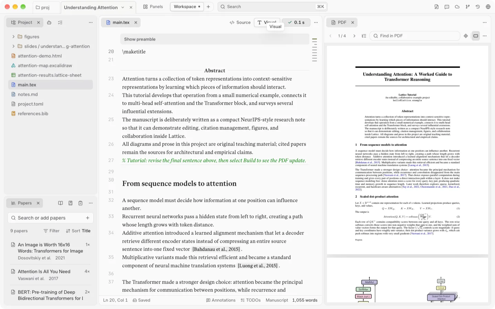

Writing
The editor
A .tex file opens in the source editor, with completion and diagnostics as you type. Above it, switch between:
- Source: the LaTeX as written.
- Visual: the same file with headings, emphasis, equations, lists and figures drawn in place. You still edit the same text; switch back any time.
The choice applies to every .tex file and is remembered; it is also in the ⋯ menu above the editor.

Useful while writing:
- Format keys:
⌘Bbold,⌘Iemphasis,⌘⇧Minline math,⌘/comment a line,⌘⌥Ewrap in an equation,⌘⇧Ewrap in an environment,⌘⌥Ian itemize list,⌘⌥Mmath symbols. The full list is in Keyboard shortcuts (⌘?). - Find and replace:
⌘Fin the file,⌘⇧Fin the whole project. - Go to:
⌘Popens any file,⌘Ga line,⌘⇧Oa section or label. - Outline: the marks at the right edge of the editor stand for the document's sections; rest the pointer on them for an Outline list with each section's number, title and PDF page, and click one to go there. The PDF toolbar's Outline button lists the same sections.
- Citations:
⌘⌥Kshows the card of the reference whose\citekey the cursor is on. See Citations and papers. - Markdown notes, spreadsheets, HTML pages, slides and boards live in the same project and open in their own editors. Typst documents have a page of their own.
- Code files: Python, TypeScript, JavaScript, Rust, Go, C and C++, Java, R, Lua, shell scripts, YAML, TOML, JSON, Makefiles, Dockerfiles, CSS, HTML and BibTeX open with syntax highlighting. A fenced code block in a Markdown note is highlighted in the same languages and in the same colors as a file of that language, from the code theme.
- Markdown tables: drag a column border in the visual editor to resize the column, or double-click it to fit the column to its content. Drag a row's bottom border to make the row taller, or double-click it to give the row its content's height again. Widths and heights are remembered for the next time you open the file, and the
.mdfile itself stays plain Markdown. - Spreadsheets: Control-click or right-click opens a cell's menu;
⌘-click adds another range to the selection.
Lattice saves as you type. The status bar shows the line and column, whether the file is saved, and the word count.
Select text to work on it
Selecting text in the editor shows a small toolbar: Proofread (⌘⌥P), Polish, Rewrite with an instruction and Annotate. The first three ask the Agent for an edit with a reason for each change, which you accept or reject in place; Annotate leaves a note for later. See The Agent.
The PDF beside your source, and jumping between the two, are on Building and fixing errors.